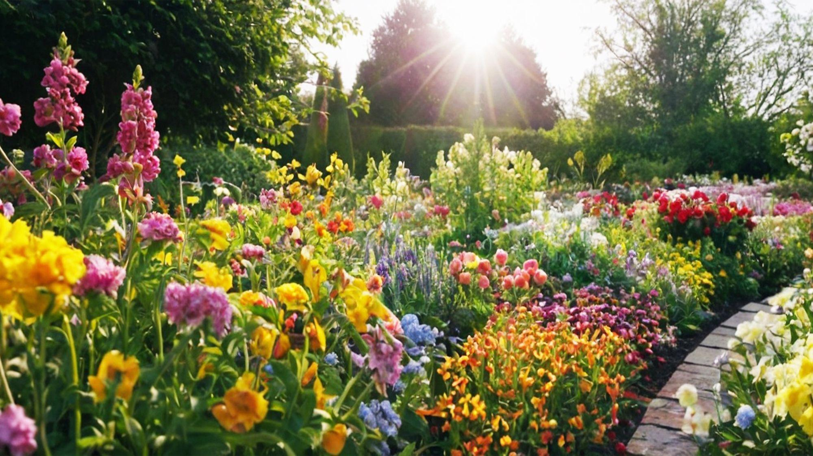
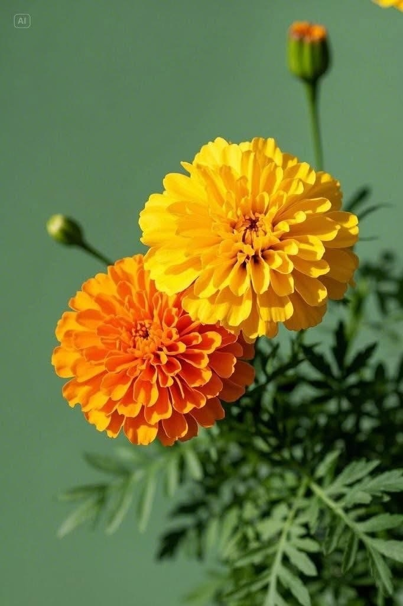
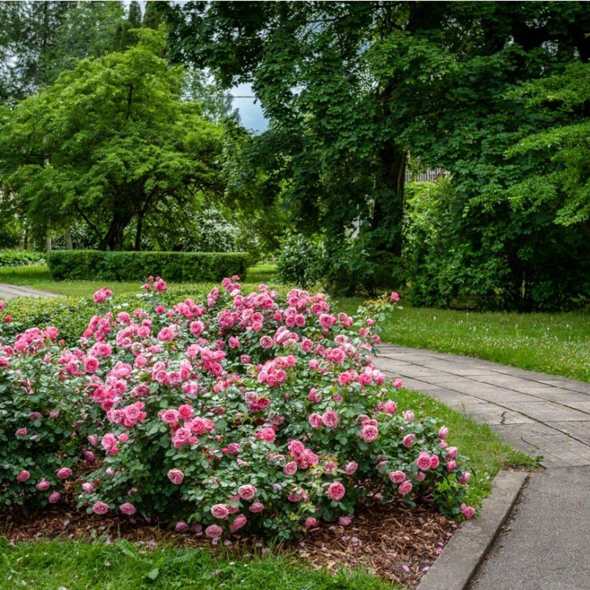
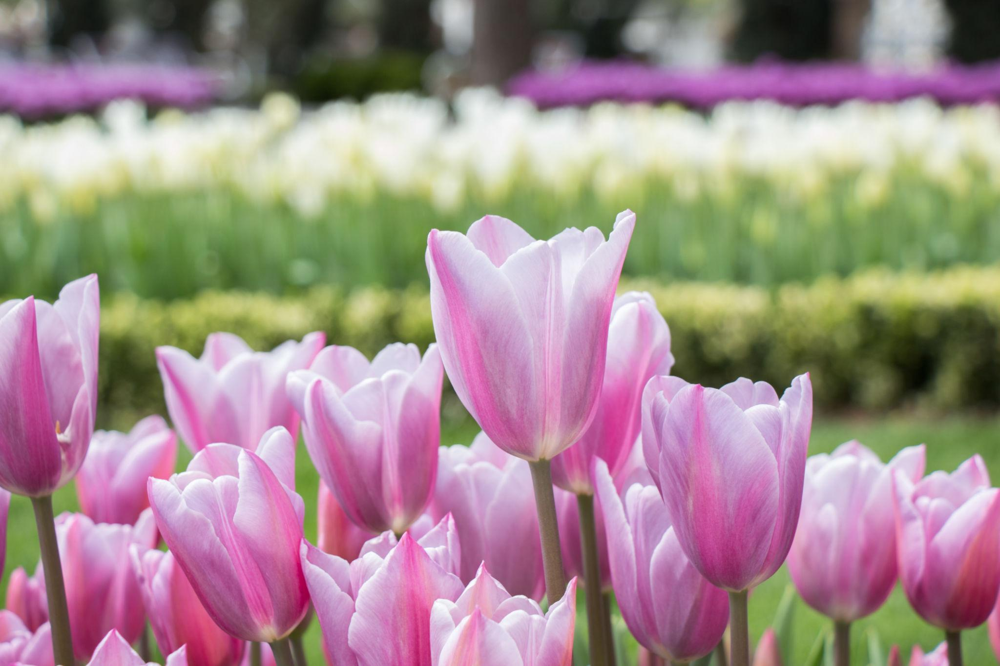
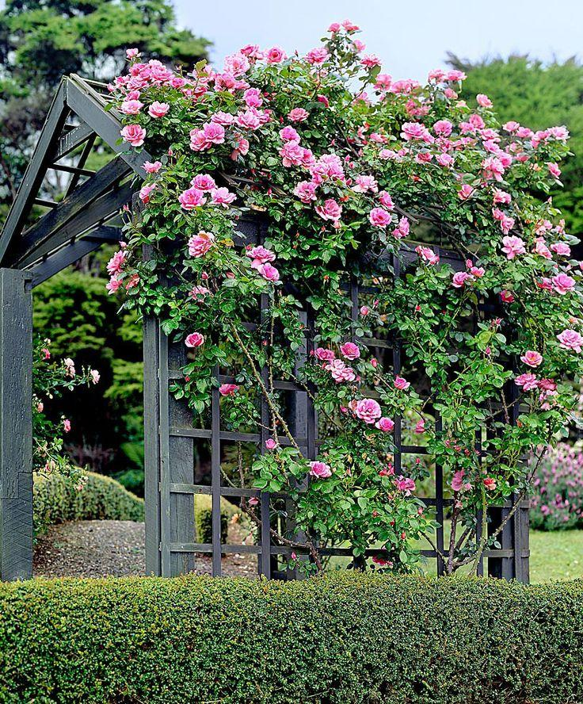
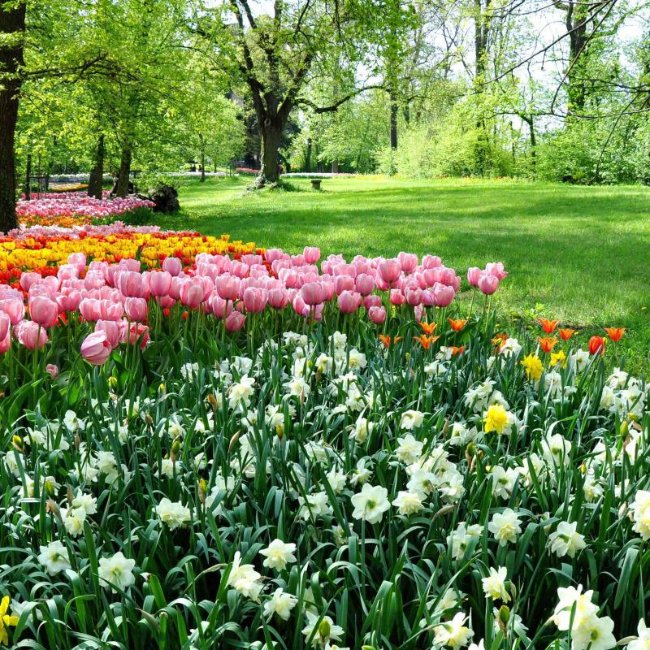
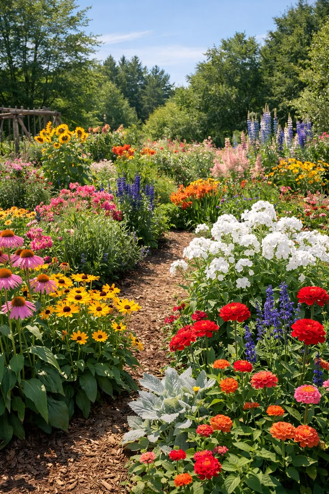
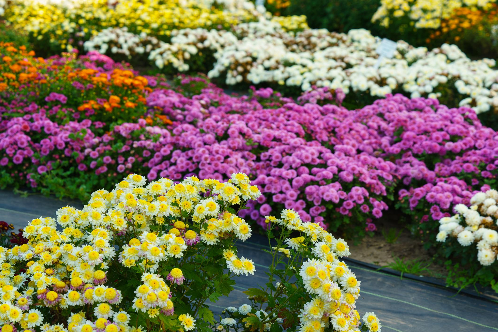
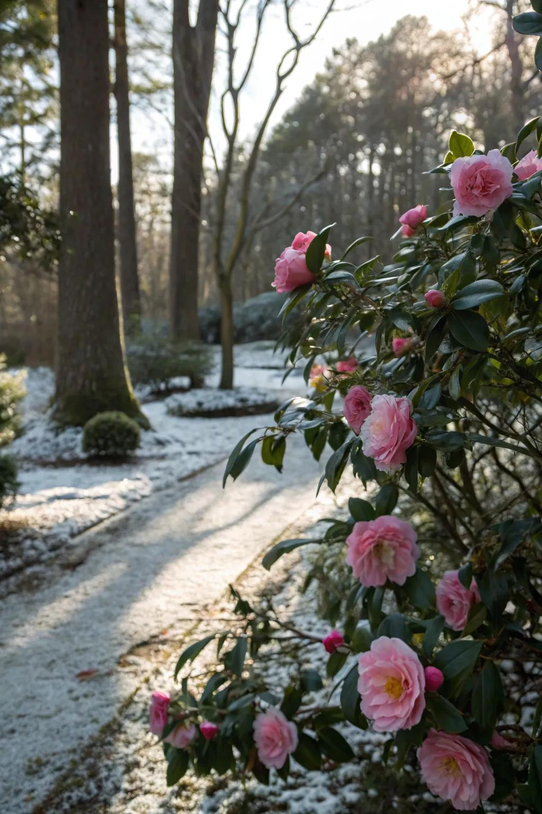
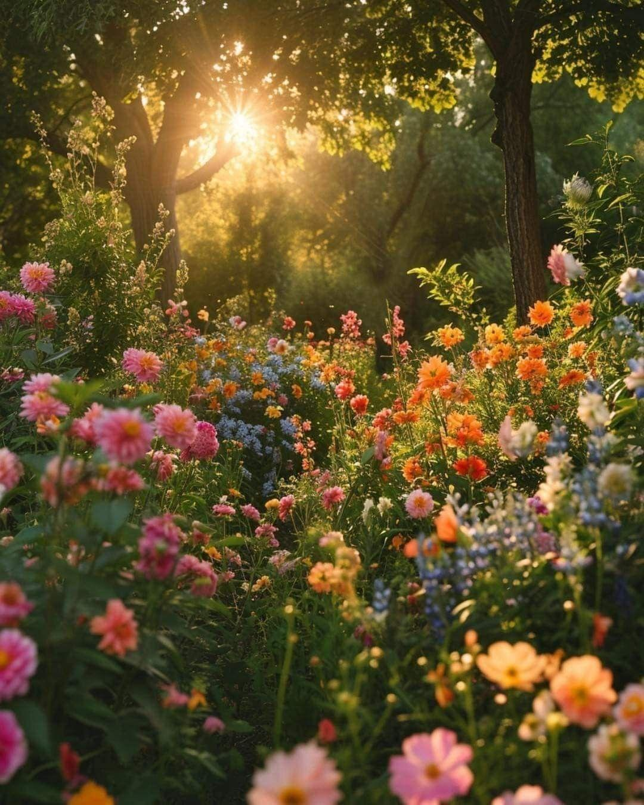

Every flower has its own beauty and blooming time. Discover different types of flowers and learn when they usually bloom.

Flowers can be classified by their life cycles and how they grow.

Annual flowers complete their life cycle in one growing season. They grow, produce flowers, create seeds, and then die.
Examples: Marigold, Zinnia

Perennial flowers live for more than two years. They can bloom repeatedly over several growing seasons when properly cared for.
Examples: Rose, Lavender

Bulb flowers grow from underground storage structures that store nutrients. Many varieties bloom during particular seasons.
Examples: Tulip, Daffodil

Climbing flowers grow upward or spread along supports such as fences, trellises, and walls. Some produce beautiful flowers throughout their growing season.
Examples: Morning Glory, Climbing Rose
Different flowers bloom at different times of the year, depending on their variety and climate.

Spring is a season of new growth. Many flowers bloom as temperatures become warmer and daylight increases.
Common examples: Tulip, Daffodil

Many flowers thrive in warm weather. Sun-loving varieties can produce abundant blooms when they receive enough water.
Common examples: Sunflower, Hibiscus

In temperate climates, some flowers bloom during autumn as temperatures begin to cool. Chrysanthemums are a well-known example.
Common examples: Chrysanthemum, Dahlia

Some flowers can bloom during colder months. Their flowering time depends on the species and local climate.
Common examples: Camellia, Pansy

A flower's blooming time is influenced by several environmental factors.
Some flowers need warm temperatures, while others require cooler conditions.
The amount of sunlight and daylight can affect when a flower blooms.
Proper watering supports healthy growth and flower production.
Different species and varieties have different flowering periods.
BLOOMING GUIDE
A general guide to the flowering periods of some popular flowers.
| Flower | Typical Flowering Period | Notes |
|---|---|---|
| Rose | Varies by variety and climate | Some varieties bloom repeatedly. |
| Plumeria | Warm months | Common in tropical climates. |
| Lily | Varies by species | Different lilies bloom at different times. |
| Carnation | Can bloom over an extended period | Flowering depends on variety and conditions. |
| Sunflower | Warm growing season | Needs plenty of sunlight. |
| Chrysanthemum | Often late summer to autumn | Flowering varies with climate and variety. |
Flowering periods are approximate. Local climate, growing conditions, and flower varieties can change the blooming time.